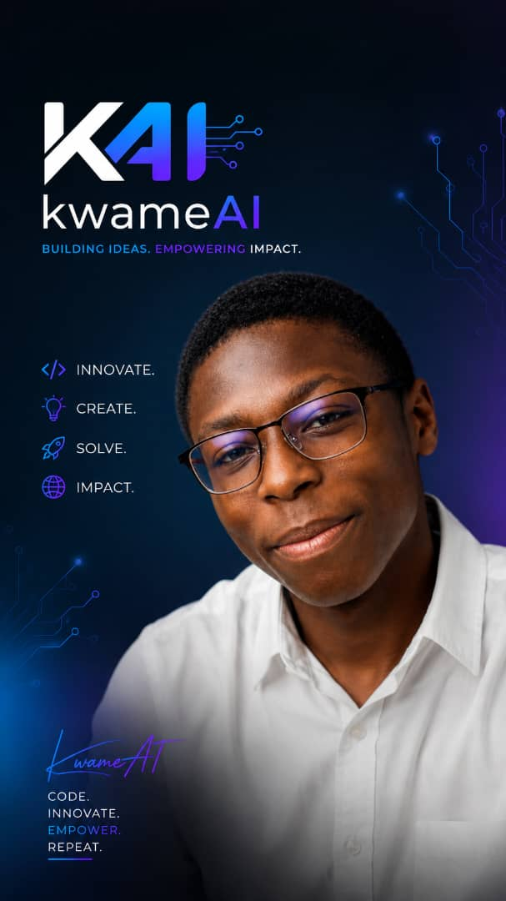

Meet the creator
The person
behind kwameAI.

Hello, I'm the creator
behind kwameAI.
My interests are artificial intelligence, robotics and turning ideas into working projects. Through kwameAI, I share that curiosity, including my computer vision demonstration and the technology behind it.
My approach is captured in the words on my brand: innovate, create, solve and impact. This website brings together my work, images and experiments in one place.
A little curiosity goes a long way. Select the button to discover a fact.